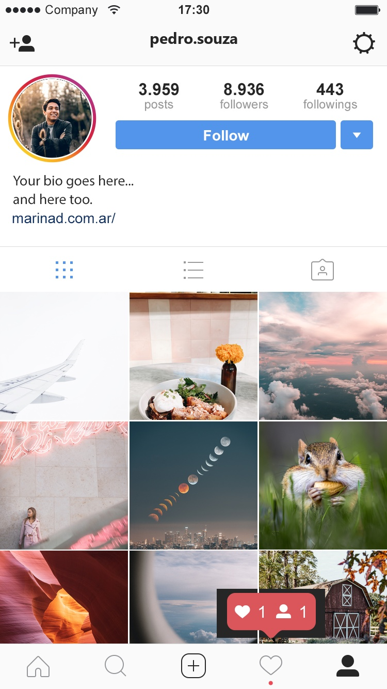

在 Instagram 版型放入大頭貼、帳號 pedro.souza 與 9 張貼文照片，再放進 iPhone 模擬圖，輸出 instagram-grid.jpg。

Instagram-Profile-2022.psd 的合成圖層作為版型底圖。picture (n).jpg 等比例裁切成正方形貼入；最後一列只貼可見的 180px 高度，避免蓋掉底部導覽列，並把按讚小氣泡貼回最上層。username 覆蓋成 pedro.souza。cv2.getPerspectiveTransform 做透視變形，再以四邊形遮罩羽化合成。產生成品的完整程式：build.py（Python + Pillow + OpenCV）
Instagram-Profile-2022.psd：Instagram 個人頁版型profile-pic.jpg：大頭貼picture (1)~(9).jpg：九宮格貼文照片iphone-mock.jpg：iPhone 手持模擬圖